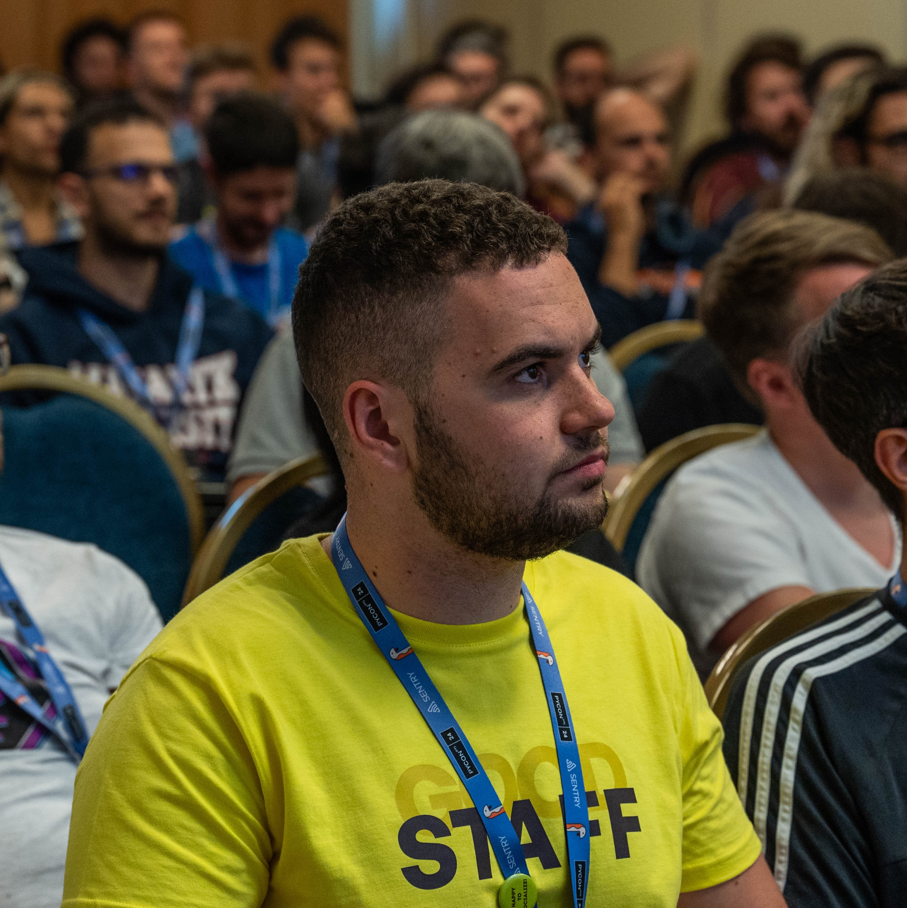

HTEC
AI Engineer | July 2026 - present
Building AI agents for clients.
I work on vision foundation models and generative models for high-resolution images with scarce, weak labels, from problem formulation to working systems. My recent work includes a first-author MICCAI 2026 paper, full-resolution diffusion-based image synthesis (patent in approval phase), and LLM agents.

My work sits between research and engineering. I care about models that are not only strong on paper, but also efficient, explainable, and realistic to integrate into production workflows.
Most of my research has been on high-resolution mammography at clinical scale (terabytes of images), where weak supervision, large image sizes and clinical constraints force careful system design. That covers lightweight multiple instance learning heads on frozen foundation encoders, explainability without dense annotations, diffusion models for full-resolution synthesis, and flow matching over sets of representations.
At HTEC I build LLM agents for clients. I have been a heavy LLM user since day one of ChatGPT, and Claude Code is my daily driver.
I am pursuing a PhD in Artificial Intelligence at the Faculty of Technical Sciences, University of Novi Sad, expected to finish in Q2 2027.
Generative Models
Diffusion, flow matching, high-resolution synthesis
Foundation Models
Frozen encoders, SSL adaptation, efficient downstream learning
Research to Production
LLM agents, APIs, deployment, monitoring
AI Engineer | July 2026 - present
Building AI agents for clients.
AI Consultant | April 2026 - August 2026
Worked with the executive sponsor to define the project vision and led end-to-end delivery of an agentic AI for automated analytics over tabular business data.
Research Engineer | April 2023 - April 2026
Co-led MAMBO, a high-resolution mammography generation system; adapted self-supervised foundation models for medical imaging; developed SetFlow, flow matching over SSL representation spaces for weakly supervised learning and data augmentation. TA at Google DeepMind EEML 2024; mentored MSc and BSc students.
AI Engineer / Consultant | January 2024 - November 2025
Productionization and deployment of a downstream mammography classification model.
R&D Engineer | July 2022 - March 2023
Built a 3D CNN instance segmentation pipeline with custom voxel/vector-space processing.
Student Intern | September 2019 - July 2022
Developed a Roslyn-based automated refactoring tool for enterprise .NET systems using domain-driven design and test-driven development principles.
PhD, Artificial Intelligence | 2023 - expected Q2 2027
MSc, Intelligent Systems | 2022 - 2023 | GPA 10/10
BSc, Computer Science | 2018 - 2022 | GPA 9.5/10